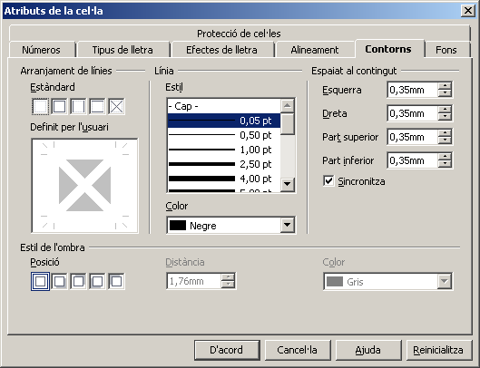
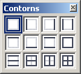

L'opció de menú Format | Cel·les… | Contorns (Vores en algunes versions de El LibreOffice Calc), permet establir les característiques de les línies de contorn de la cel·la o cel·les seleccionades. Cal que tingueu present que les línies grises que es mostren al Calc, tan sols serveixen de guia a l'usuari, i que, aquestes, no s'imprimeixen excepte que s'hagin definit expressament.

Seleccioneu la cel·la o grup de cel·les de les quals voleu establir el contorn (les vores)
Demaneu Format | Cel·les… | Contorns
L'Arranjament de línies / Estàndard, us permet escollir la combinació de línies a dibuixar
No posis vores
Posa totes quatre vores
Posa només les vores esquerra i dreta
Posa només les vores superior i inferior
Posa només línies diagonals
Línia / Estil, permet establir el gruix i model de línia, així com el color d'aquesta
Estil de l'ombra / Posició, permet fer aparèixer o no l'ombra de la cel·la o cel·les seleccionades. També la posició, distància i color de la ombra.
Espaiat al contingut, estableix la distància entre les línies de contorn i el contingut de la cel·la o cel·les seleccionades. La casella Sincronitza, si està habilitada, estableix el mateix valor per a totes quatre posicions; si està deshabilitada, permet establir distàncies diferents per a les quatre posicions.
En qualsevol cas, la cel·la modifica la seva alçada i amplada per a ajustar-se a les distàncies seleccionades.
Premeu el botó D'acord
Per les situacions en que només sigui necessari dibuixar les línies de contorn de les cel·les, l'eina Vores pot esdevenir el sistema més còmode i ràpid per fer aparèixer les línies de contorn de les cel·les.
Seleccioneu la cel·la o grup de cel·les de les quals voleu establir el contorn (les vores)
Premeu l'eina Vores
De la finestra que obtindreu

escolliu el model que s'ajusti a les vostres preferències. D'esquerra a dreta i de dalt a baix, les eines de la finestra són les següents:
Excepte la primera i la última, les opcions són additives i s'hi pot acumular més d'una opció sobre la cel·la o grup de cel·les seleccionades.
Feu clic sobre l'eina per establir les línies de contorn